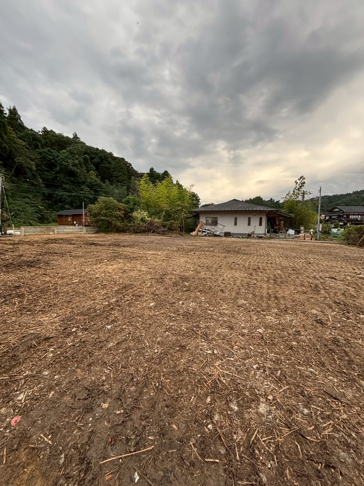

自治体の補助金制度を活用することで、解体費用を大幅に抑えられる場合があります。 義翔工業では補助金申請のサポートも行っています。

「解体費用が心配で一歩踏み出せない」という方も多くいらっしゃいます。 自治体の補助金制度をうまく活用すれば、費用負担を抑えながら 空き家・空き地の問題を解決できる場合があります。
義翔工業では、対象になるかどうかの確認から申請書類の準備まで、 専門スタッフが丁寧にサポートします。
岩国市では一定の条件を満たす空き家の解体に対して補助金が交付される場合があります。
※補助金制度は年度により変更される場合があります。
最新情報は岩国市役所にお問い合わせください。
危険な状態の空き家を解体する場合に、除却費用の一部を補助する制度です。市区町村によって条件が異なります。
※対象要件は自治体ごとに異なります。
義翔工業でも可能な範囲でサポートします。
補助金が使えるか確認します
必要書類の準備をサポート
自治体へ補助金申請を行う
認定後に解体工事を実施
工事完了後に補助金を受け取り
FREE CONSULTATION
「うちは対象になるの？」という確認だけでも大歓迎です。
お気軽にご相談ください。相談・お見積もりは無料です。